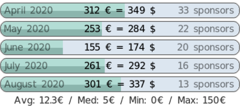

|
Gmicky, the mascot
(artwork by David Revoy)
Latest donations received:



|
is a full-featured open-source
framework for digital image processing,
distributed under the
CeCILL free software licenses (LGPL-like and/or GPL-compatible).
It provides several user interfaces to convert / process / visualize
generic image datasets, ranging from 1D scalar signals to 3D+t sequences of multi-spectral volumetric images, hence including 2D color images.
We provide these different user interfaces:
1 - gmic, a command-line tool to use the image processing features from a shell.
In this setting, may be seen as a friendly companion to the ImageMagick
or GraphicsMagick software suites.
[learn more...]
|

gmic, the command-line interface of . |
2 - G'MIC-Qt, a plug-in to bring capabilities
to the image retouching and painting software GIMP, Krita and Paint.NET.
More than 500 filters are already available, sorted by category (Artistic, Black & white, Colors, Contours, Deformations, Degradations, Details, Color Grading, Frames, Layers,
Light & shadows, Patterns, Rendering, Repair, Sequences, etc.).
[download...]
|

The plug-in in action! |
3 - libgmic, a small, portable, thread-safe and multi-threaded, C++ image processing library to be linked to third-party applications.
Its simple API allows programmers to add all features in their own software without much efforts
(a C API is available as well).
[learn more...]
|

libgmic, a small, thread-safe, multi-threaded, C++ image processing library to embed all features
in third-party applications. |
4 - Online, a web service to allow users applying image processing algorithms
on their images, directly from a web browser.
[try it now...]
|

Online, the web service to use from a browser. |
5 - ZArtScreenshot of ZArt in action.,
a Qt-based interface for real-time processing of video streaming coming from webcams or video files.
[learn more...]
|

ZArt, a real-time video processing software using the processing library. |
Other open-source projects are known to use some of the features:
- EKD, a free software dedicated to postproduction processing for videos and images.
- Flowblade, a multitrack non-linear video editor for Linux released under GPL 3 license.
- Photoflow, a fully non-destructive photo retouching program.
- Veejay, a visual instrument and realtime video sampler.
The source code has been registered to the APP
(French Agency for the Protection of Programs) by the CNRS,
under registration number:
IDDN.FR.001.170024.000.S.P.2017.000.21000.
|